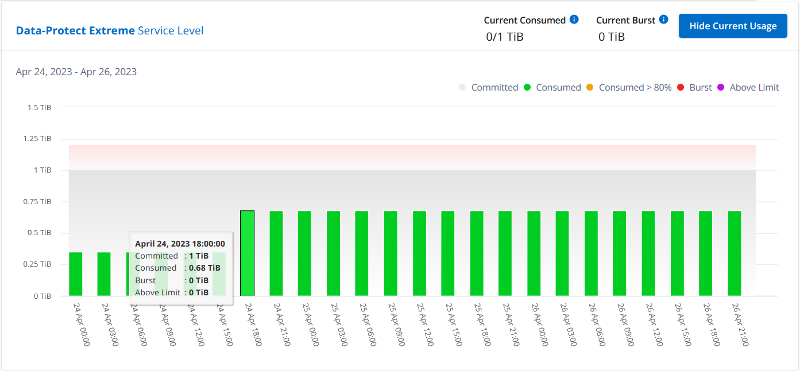

NetApp Keystone 服务
NetApp Keystone 服务
Keystone的Digital Advisor信息板和报告
 建议更改
建议更改
通过Active IQ 数字顾问(Digital Advisor)信息板、您可以监控与NetApp Keystone 订阅相关的使用情况并生成报告。订阅Keystone服务时、您可以在Digital Advisor信息板上的* Keystone订阅*小工具中查看订阅和使用情况的详细信息。

|
此处提供的信息包括适用场景 ONTAP 和StorageGRID。相关章节指出了一些例外情况。 |
有关Keystone Digital Advisor小工具的信息、请参见 "查看NetApp Keystone 订阅的容量利用率"。
要查看Keystone订阅和使用情况详细信息、请执行以下步骤：
-
登录到Digital Advisor。您可以看到* Keystone订阅*小工具、其中汇总了已购买Keystone服务的容量使用情况。
-
在* Keystone订阅*小工具中、单击*查看更多详细信息*以在* Keystone订阅*页面上查看卷上的使用情况详细信息和警报。或者、从左侧导航窗格中、转到*常规> Keystone订阅*。
订阅详细信息、每个服务级别的使用情况图表以及卷详细信息将显示在* Keystone订阅*屏幕的不同选项卡中。
|
|
Keystone订阅中的容量消耗会在信息板和报告上以Tib为单位显示、并四舍五入为小数点后两位。如果使用量小于0.01TiB、则该值显示为 0 或 No Usage。这些屏幕上的数据以UTC时间(服务器时区)显示。输入查询日期时、系统会自动将其视为UTC时间。
|
有关使用情况指标的信息、请参见 "服务级别指标和定义"。有关Keystone中使用的不同容量的信息、请参见 "Keystone 服务容量定义"。
订阅
您可以在*订阅*选项卡中查看订阅列表。

您可以看到以下信息。对于某些字段和列、您可能会看到追加信息有关数据的信息或警告图标以及工具提示。
-
订阅编号：NetApp分配的Keystone订阅的订阅编号。
-
跟踪ID：激活订阅时分配的跟踪ID。这是每个订阅和站点的唯一ID、用于跟踪订阅。

如果您的订阅分配了数据保护服务级别或费率计划、则会显示一个工具提示、帮助您确定MetroCluster设置中合作伙伴订阅的跟踪ID。要了解如何在MetroCluster配置中查看合作伙伴订阅的详细使用情况、请参阅 "数据保护参考图表"。 -
使用类型：您可能订阅了多个Keystone (版本1)或Keystone STaaS (版本2)订阅。对于这两种订阅类型、服务级别的费率计划规则可能会有所不同。通过查看此列中的值、您可以了解使用类型是按任一的已配置使用量还是逻辑使用量计费
v1或v2。有关Keystone STaaS的详细信息、请参见 "Keystone STaaS文档"。 -
计费期限：订阅的计费期限、例如每月、每季度或每年。
-
开始日期：订阅的开始日期。
-
结束日期：订阅的结束日期。如果您有每月自动续订的按月计费订阅、您会看到
Month-on-month而不是结束日期。根据此日期、您可能会看到即将到期或附加了自动续订策略的订阅的信息消息。 -
使用状态：指示已使用或过度使用的订阅量。如果要查看最高消耗记录、可以按此列对列表进行排序。
-
：单击此订阅图标可打开*当前使用情况*选项卡，其中包含该订阅的其他详细信息。
-
 ：单击此图标将打开*Capacity Try*选项卡，您可以在其中查看此订阅中每个服务级别的历史使用数据。
：单击此图标将打开*Capacity Try*选项卡，您可以在其中查看此订阅中每个服务级别的历史使用数据。
您可以参考以下使用情况指示器来检查每个订阅的使用状态：

 ：未根据服务级别的已提交容量记录容量使用情况
：未根据服务级别的已提交容量记录容量使用情况
 ：使用量正常、在已承诺容量的80%范围内
：使用量正常、在已承诺容量的80%范围内
 ：最大使用量、即使用量即将达到已承诺容量的100%或更多。对于超过已提交容量80%的任何消耗、*已用*列将显示此指示符
：最大使用量、即使用量即将达到已承诺容量的100%或更多。对于超过已提交容量80%的任何消耗、*已用*列将显示此指示符
 ：消耗量在突发限制范围内。突发消耗量是指在服务级别的100%已承诺容量之上、并且处于商定的突发使用量限制(例如120%)范围内的消耗量
：消耗量在突发限制范围内。突发消耗量是指在服务级别的100%已承诺容量之上、并且处于商定的突发使用量限制(例如120%)范围内的消耗量
 ：表示消耗量超过规定的突发限制
：表示消耗量超过规定的突发限制
当前使用情况
要了解订阅的详细信息，请单击*当前使用情况*选项卡，然后选择所需的订阅编号。

服务级别名称、已提交、已使用、可用容量以及当前和累积突发使用量等详细信息将显示在TiB中。
|
|
。 |
有关Keystone存储服务和相关服务级别的信息、请参见 "服务级别"。
容量趋势
*容量趋势*选项卡显示特定时间段内Keystone订阅的历史数据。垂直图显示选定时间范围的使用情况详细信息、并提供相应的指示符、供您比较和生成报告。
-
单击*容量趋势*选项卡。
-
选择要查看其详细信息的所需订阅。默认情况下、系统会选择您帐户名称中的第一个订阅。
-
如果要查看历史数据并分析容量使用趋势，请选择*Capacity Try*。如果要查看已生成发票的历史突发使用情况数据，请选择“*开票应计突发事件”。您可以使用此数据根据发票分析计费使用情况。
查看容量趋势
了解更多信息。
如果选择了*Capacity Try*选项，请按照以下步骤操作：
-
从*自日期*和*至日期*字段中的日历图标中选择时间范围。选择查询的日期范围。日期范围可以是本月开始日期或订阅开始日期到当前日期或订阅结束日期。您不能选择未来日期。
为了获得最佳性能和用户体验、请将查询的日期范围限制为三个月。 -
单击 * 查看详细信息 * 。系统将根据选定时间范围显示每个服务级别的订阅历史使用数据。
条形图显示日期范围内服务级别名称以及该服务级别占用的容量。收集的日期和时间显示在图表底部。根据查询的日期范围、使用情况图表将显示在30个数据收集点范围内。您可以将鼠标悬停在图表上方、以查看该数据收集点的已提交、已使用、突发以及突发限制以上数据的使用情况细分。

条形图中的以下颜色表示服务级别中定义的已用容量。图表中的每月数据用一条竖线分隔。
-
绿色：在80%以内。
-
琥珀色：80%- 100%。
-
红色：突发使用量(承诺容量的100%达到约定的突发限制)
-
紫色：超过突发限制或
Above Limit。
|
|
空白图表表示您的环境中在该数据收集点没有可用数据。 |
您可以单击切换按钮*显示当前使用情况*来查看当前计费期间的使用量、突发使用量和应计突发数据。这些详细信息不基于查询的日期范围。
-
当前已用容量：用于指示为服务级别定义的已用容量(以TiB为单位)。此字段使用特定颜色：
-
无颜色：突发或超过突发使用量。
-
灰色：不使用。
-
绿色：在已提交容量的80%范围内。
-
琥珀色：已提交到突发容量的80%。
-
-
当前突发：指示已用容量是否在定义的突发限制内或以上。在约定的突发限制内使用的任何内容、例如、超出已提交容量20%的使用量均在突发限制范围内。如果使用量超过突发限制、则进一步使用量将被视为超过突发限制。此字段显示特定颜色：
-
无颜色：无突发使用量。
-
红色：突发使用量。
-
紫色：超过突发限制。
-
-
应计突发：当前计费期间每月计算的应计突发使用量或已用容量的指标。累积突发使用量是根据服务级别的已使用容量和已用容量计算得出的：
(consumed - committed)/365.25/12。
查看已开票的应计突发量
了解更多信息。
如果您选择了*开票应计突发*选项，则默认情况下，您可以查看过去12个月内已计费的每月应计突发使用量数据。您可以按过去30个月的日期范围进行查询。此时将显示发票数据的条形图、如果尚未对使用量计费、则会显示该月的_Pending _。
|
|
已开票的应计突发使用量是根据服务级别的已提交容量和已使用容量按计费期间计算的。 |

此功能在仅预览模式下可用。请联系您的KSM以了解有关此功能的更多信息。
数据保护参考图表
了解更多信息。
如果您已订阅数据保护服务、则可以在*容量趋势*选项卡上查看MetroCluster配对站点的消耗数据的分解情况。
有关数据保护的信息、请参见 "数据保护"。
如果在MetroCluster设置中配置了ONTAP存储环境中的集群、则Keystone订阅的使用情况数据将拆分到同一个历史数据图表中、以显示主站点和镜像站点上基本服务级别的使用情况。
|
|
仅针对基本服务级别拆分消耗条形图。对于数据保护服务级别、不会显示此划分。 |
对于数据保护服务级别、总使用量会在配对站点之间分摊、每个配对站点的使用量会通过单独的订阅进行反映和计费；即、主站点使用一个订阅、镜像站点使用另一个订阅。因此，当您在“*容量趋势”选项卡上选择主站点的订阅编号时，DP服务级别的消耗图表仅显示主站点的离散消耗详细信息。由于MetroCluster配置中的每个配对站点都充当源和镜像、因此每个站点的总使用量包括源卷以及在该站点创建的镜像卷。
|
|
“当前使用情况”选项卡中订阅的跟踪ID旁边的工具提示可帮助您在MetroCluster设置中确定合作伙伴订阅。 |
对于基本服务级别、每个卷在主站点和镜像站点配置时计费、因此、同一条形图会根据主站点和镜像站点的使用情况进行拆分。
下图显示了_Extreme服务级别(基础服务级别)和主订阅编号的图表。相同的历史数据图表以主站点所用颜色代码的较浅阴影标记镜像站点的使用量。鼠标悬停时的工具提示会显示主站点和镜像站点的消耗分解(以TiB为单位)、分别为1.02 TiB和1.05 TiB。

对于_Data-Protect至尊_服务级别(数据保护服务级别)、图表如下所示：

在检查二级订阅时、您会发现、与配对站点位于同一数据收集点的_Extreme服务级别(基础服务级别)条形图已反转、主站点和镜像站点的消耗细分分别为1.05 TiB和1.02 TiB。

对于_Data-Protect至尊_服务级别(数据保护服务级别)、该图表与配对站点位于同一个收集点处、如下所示：

有关MetroCluster 如何保护数据的信息、请参见 "了解 MetroCluster 数据保护和灾难恢复"。
卷和对象
在*卷和对象*选项卡上，您可以在ONTAP中查看卷的使用情况和其他详细信息。对于StorageGRID 、此选项卡将显示节点及其在对象存储环境中的个别使用情况。
|
|
此选项卡的名称因站点部署的性质而异。如果同时具有卷和对象存储，则可以看到*卷和对象*选项卡。如果存储环境中只有卷，则名称将更改为*Volumes*。对于对象存储，可以看到*Objects*选项卡。 |
查看ONTAP卷详细信息
了解更多信息。
对于ONTAP、*卷*选项卡将显示有关Keystone订阅所管理的存储环境中卷的容量使用情况、卷类型、集群、聚合和服务级别等信息。
-
单击 * 卷 * 选项卡
-
选择订阅编号。默认情况下、系统会选择第一个可用订阅编号。
此时将显示卷详细信息。您可以将鼠标悬停在列标题旁边的信息图标上、滚动浏览列并了解有关这些列的更多信息。您可以按列排序并筛选列表以查看特定信息。
对于数据保护服务、将显示一个附加列、指示此卷在MetroCluster配置中是主卷还是镜像卷。您可以单击*复制节点序列*按钮来复制单个节点序列号。

查看StorageGRID节点和使用情况
了解更多信息。
对于StorageGRID、此选项卡显示对象存储节点的逻辑使用情况。
-
单击*Objects*选项卡。
-
选择订阅编号。默认情况下、系统会选择第一个可用订阅编号。选择订阅编号后、将启用对象存储详细信息的链接。

-
单击此链接可查看每个节点的节点名称和逻辑使用情况详细信息。

性能
通过*性能*选项卡、您可以查看Keystone订阅所管理的ONTAP卷的性能指标。
|
|
您可以选择使用此选项卡。要查看此选项卡、请联系支持部门。 |
-
单击*Performance*选项卡。
-
选择订阅编号。默认情况下、将选择第一个订阅编号。
-
从列表中选择所需的卷名称。
或者、您也可以单击
图标(位于*卷*选项卡中的ONTAP卷旁边)以导航到此选项卡。 -
选择查询的日期范围。日期范围可以是本月开始日期或订阅开始日期到当前日期或订阅结束日期。您不能选择未来日期。
检索到的详细信息基于每个服务级别的服务级别目标。例如、峰值IOPS、最大吞吐量、目标延迟和其他指标由服务级别的各个设置决定。有关设置的详细信息、请参见 "服务级别"。
|
|
如果选中*SLO参考行*复选框，则IOPS、吞吐量和延迟图将根据服务级别的服务级别目标呈现。否则、它们将以实际数字显示。 |
水平图上显示的性能数据是每五分钟显示一次的平均值、并按照查询的日期范围进行排列。您可以滚动浏览图形并将鼠标悬停在特定数据点上、以进一步深入查看收集的数据。
您可以根据订阅编号、卷名称和选定日期范围的组合在以下部分中查看和比较性能指标。系统将根据分配给卷的服务级别显示详细信息。您可以查看集群名称和卷类型、即分配给卷的读取和写入权限。此外、还会显示与此卷关联的任何警告消息。
IOS/TiB
此部分将根据查询的日期范围显示卷中工作负载的输入-输出图形。此时将显示服务级别的峰值IOPS和当前IOPS (在过去五分钟内、不基于查询的日期范围)、以及时间范围内的最小、最大和平均IOPS (以IOS/TiB为单位)。

吞吐量(MBps/TiB)
此部分将根据查询的日期范围显示卷中工作负载的吞吐量图形。此时将显示服务级别的最大吞吐量(SLO最大值)和当前吞吐量(在过去五分钟内、不基于查询的日期范围)、以及时间范围的最小、最大和平均吞吐量(以MBps/TiB为单位)。

延迟(毫秒)
此部分将根据查询的日期范围显示卷中工作负载的延迟图。此时将显示服务级别(SLO目标)的最大延迟和当前延迟(过去五分钟内的延迟、而不是基于查询的日期范围)、以及时间范围内的最小、最大和平均延迟(以毫秒为单位)。
此图具有以下颜色：
-
浅蓝色：Laty.这是实际延迟、包括Keystone服务以外的任何延迟。这可能包括额外的延迟、例如网络与客户端之间发生的延迟。
-
深蓝色：有效延迟。有效延迟是指与SLA相关的延迟、仅适用于Keystone服务。

已用逻辑容量(TiB)
此部分显示卷的已配置容量和已用逻辑容量。当前逻辑已用容量(在过去五分钟内、不基于查询的日期范围)以及时间范围的最小、最大和平均使用量将以Tibs为单位显示。在此图上、灰色区域表示已使用容量、黄色图表示逻辑使用量。

生成报告
通过单击*下载CSV-*按钮，您可以从每个选项卡生成并查看有关订阅详细信息、某个时间范围的历史使用情况数据以及卷详细信息的报告： 
详细信息以CSV格式生成、您可以保存这些详细信息以供将来使用。
在*容量趋势*选项卡中，您可以选择下载查询日期范围内默认30个数据收集点的报告，或下载每日报告。

“*容量趋势”选项卡的示例报告，其中转换了图形数据：

查看警报
信息板上的警报会发送一些警告消息、使您能够了解存储环境中发生的问题。
警报可以有两种类型：
-
信息：对于诸如订阅即将结束等问题、您可以看到信息警报。将光标悬停在信息图标上方、了解有关问题描述 的更多信息。
-
警告：违规等问题将显示为警告。例如、如果受管集群中的卷未附加自适应QoS (AQoS)策略、您可以看到一条警告消息。您可以单击警告消息上的链接，在*Volumes*选项卡中查看不合规卷的列表。
如果您订阅了单个服务级别或速率计划、则无法看到不合规卷的警报。 有关AQO策略的信息、请参见 "计费和自适应 QoS 策略"。

有关这些注意事项和警告消息的详细信息、请联系NetApp支持部门。